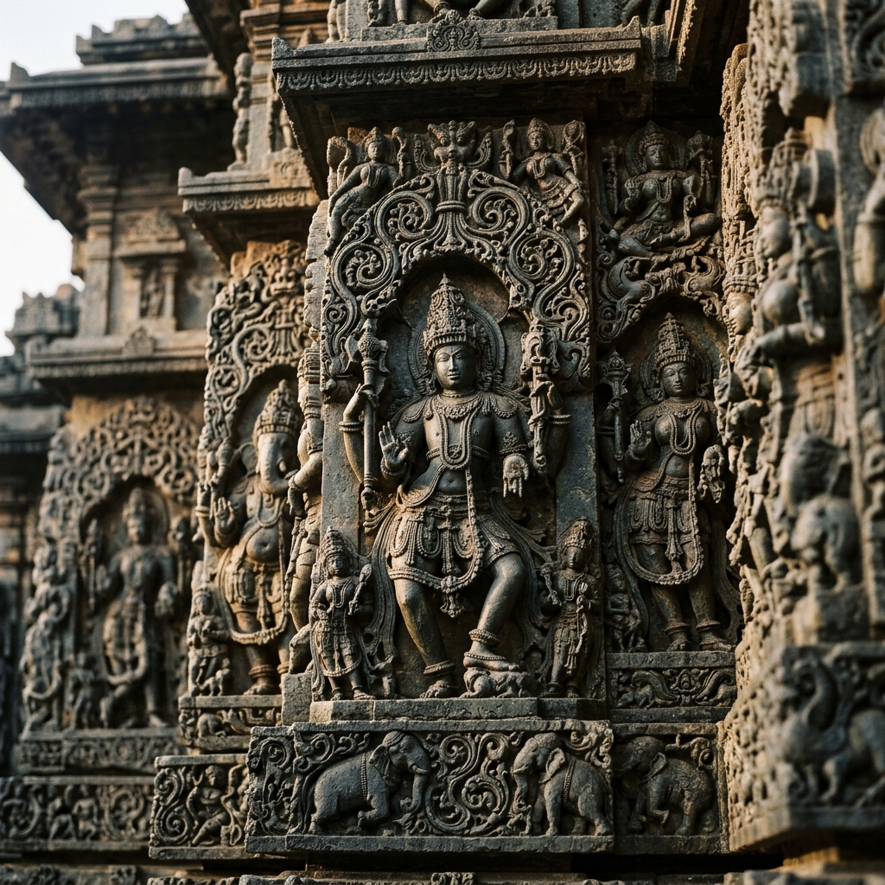

Nandgaon Nanda Baba Temple
Nandgaon, Mathura, Uttar Pradesh
The Sacred Legacy

Nandgaon is the sacred village where Lord Krishna grew up under the loving care of his foster parents Nanda Baba and Yashoda Maiya the village of his childhood, his first steps, his first words, and his earliest divine pastimes. The Nanda Baba temple atop Nandishwar Hill in Nandgaon marks the site of Nanda Baba's palace where the divine child Krishna lived for the first 11 years of his earthly sojourn before moving to Vrindavan.
Nandgaon is famous as the village of Lord Krishna's cowherd friends (gopas) companion Krishna in his playful, pranks-filled childhood. Just 0 km away is Barsana (Radha's village), and the Holi exchange between the two villages the famous Lathmar Holi where Barsana women playfully beat Nandgaon men re-enacts the divine play between Radha's companions and Krishna's friends. This Holi, starting 2 days before the main Holi date, is one of the most visually spectacular and joyful religious celebrations anywhere in India.
The Hilltop Temple
The Nanda Baba temple atop Nandishwar Hill commands excellent views of the surrounding Braj countryside, including Barsana hill 0 km away. The climb is marked by carved steps and small shrines. The temple complex includes shrines to Nanda Baba, Yashoda Maiya, and multiple forms of Bal (child) Krishna.
Lathmar Holi
The Nandgaon Lathmar Holi is the reverse gender exchange from Barsana's here, men from Nandgaon travel to Barsana to play Holi, and Barsana women beat them with laths. Then Barsana men come to Nandgaon and are similarly subjected to playful chastisement. This 2-day cycle of joyful mock-battle draws hundreds of thousands of visitors annually.
Braj Connection
Nandgaon is one of the essential stops on the Braj Chaurasi Kos Parikrama the 0 km circumambulation of the entire Braj Mandal that passes all major sites of Krishna's divine pastimes. The village retains its ancient rural character far better than Mathura or Vrindavan, and walking its streets at dawn with cows, peacocks, and devotional singing provides an extraordinary connection to the Braj of Krishna's time.
Nanda Baba's Love
Nanda Baba Krishna's adoptive father represents in the Bhakti tradition the supreme expression of Vatsalya bhava (parental love for God). His complete, uncomplicated, utterly human love for the divine child without knowledge of Krishna's cosmic identity is considered by bhakti theologians as one of the purest and most complete forms of divine love possible.
Nanda Baba lifted the divine child in his human arms and said "This is my son." And the entire universe bowed because there is no love greater than the love of a father who doesn't know he holds God and loves him simply, completely, without reason. Bhakta Surdas, Sursagar
How to Reach
Agra Airport 0 km
Delhi Airport 0 km
Mathura Junction 0 km
From Delhi (2 hours)
From Mathura (0 km), Vrindavan (0 km)
Shared autos from Barsana (0 km)
October to March
Lathmar Holi March